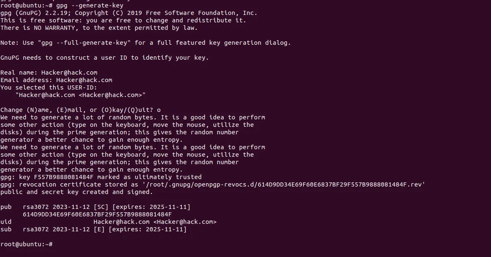
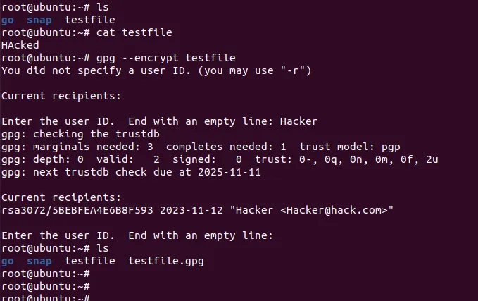
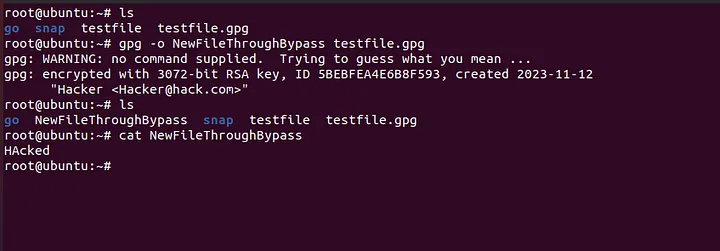

GPG Bypass
Will talk about a technique of GPG Bypass ,I discovered during one of the pentest i was doing and how i was able to use it to bypass the Filter to Gain Code Execution.
What Is GPG:
GPG which is the abbreviation for GNU privacy guard , a replacement for Symantec's PGP Cryptography is Software/binary that supports encrypting files both in symmetric and asymmetric way.
How GPG Works:
So basically it works on public key encryption
You can generate your GPG keys using the gpg binary and use those keys to encrypt a file ,share the public key to make sure the others can verify the file and use the private key to decrypt it.
Example:

As you can see we generated the GPG keys and then use it the encrypt and decrypt files as we mentioned above.
How the decryption Goes on:
So once you receive a encrypted file , you can use the GPG binary to decrypt it like below.


The question is how the gpg is being used as a filter ?
Well think of a software upgrade feature.
If you take some example , let's say the OpManager of Zoho Corp,
if you see how the upgrade happens ,
- Download the upgrade pack
- SSH into the box
- Use the OpManager's upgrade shell script by passing the Upgrade File location
- But some Applications allows such upgrades from the web it self.
The application asks you for a upgrade bundle file , and then uses that file to either download the necessary files from the Application's upgrade server and then overwrite the files,
or the bundle may it self contain the files it want to overwrite, and it uses them directly
Such upgrade functionality can be exploited to Arbitrary file write(AFW) if proper measures are not taken.
To defend against this kind of attack , the application generally accepts an encrypted bundle file whose keys to decrypt either lies on the underlying file system or it might download as per the need and this file is generally differs from one instance of the app to other.
Check out the below code,

If you see the code above, the file uses the gpg binary to verify and decrypt the file,
You may think, well there are no — decrypt flag mentioned ,so how is it even decrypting.
Thats a good catch but not enough,
When you pass a encrypted file to gpg , even if you do not mention the
-- decrypt
flag , the gpg is going to figure it by it's own and going to involve the keys for decryption and since you will not have the relevant keys , the process will fail.
But take a look on what happens when you use the above command on a terminal

The first line of output says
No Command Supplied, Trying to Guess what you mean...
Which means if you can fool the GPG to think that this is not an encrypted file but a normal gpg file then the gpg is going to simply recover the actual file which will then be used later in the upgrade process.
-- store flag
So while Iwas reading through the man page for gpg i came across the — store flag which creates a valid gpg file but doesn't involve any kind of keys,
So if i infect the actual bundle file and then pass it , the filter is going to be passed, and thus my files is going to be overwritten in the file system.
So let's spawn a new VM instance encrypt a file there and try to decrypt on this vm.


As you can see above , the file didn't got verified as the keys were different,
Now lets apply the trick.


As you can see the file got verified and the actual text file got retrieved and saved in the file specified by us.

Using this now i can craft a bundle file that will give me a Arbitrary file Write and thus can lead to RCE.(There are many ways to achieve RCE from the Arbitrary file write, can be by overwriting cronjobs, Application files, dropping shells in webroot or may be you can find some shell scripts or python scripts which gets triggered by some api and you can use it to achieve rce that way).
Note: The features are not just restricted to Software upgrade , it can be backup restore and others as well, and if you are not able to get AFW, then may be you can try ti get a File Disclosure using symlink attack.
Thats it for Today.
Thanks For Reading.
Happy Hacking.
You can connect with me at: